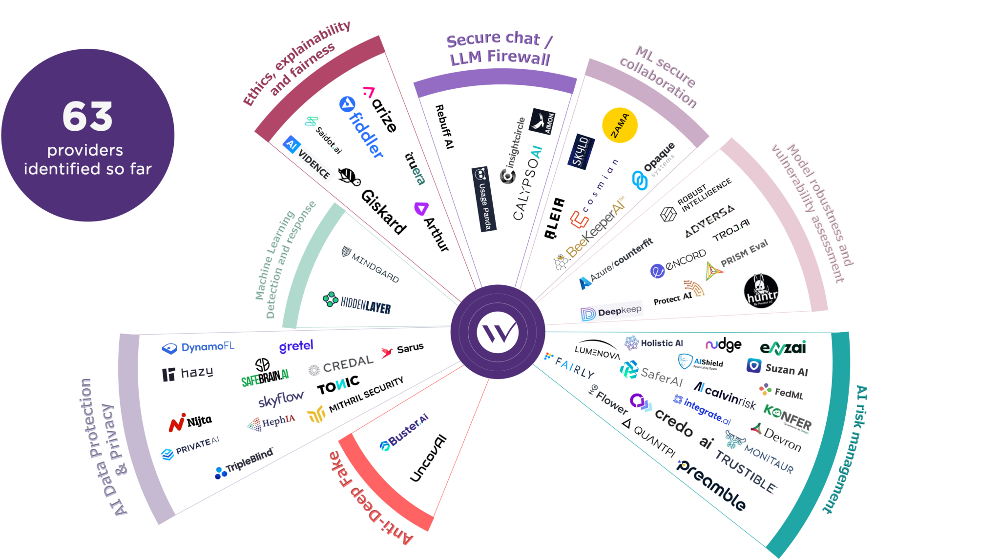

Впечатляющий MlSecOps
Курируемый на русском языке список ресурсов, которые относятся к MlSecOps(ну и немножко про атаки на AI).

Содержание
- Инструменты с открытым исходным кодом
- Защита кода моделей
- 101
- Векторы атак
- Блоги и публикации
- Уязвимости MlOps инфраструктуры
- Ресурсы сообщества
- Инфографики
Инструменты с открытым исходным кодом
В этом разделе мы с вами можем рассмотреть, какие opensource решения и PoC, существуют для выполнения задачи по защите ML. Конечно, некоторые из них являются не поддерживаемыми или будут возникать трудности с запуском. Однако, не сказать о них - большое преступление.
- ModelScan - Защита от атак на сериализацию ML-моделей.
- NB Defense - решение для защиты Jupyter Notebook.
- Garak - сканер уязвимостей для LLM.
- Adversarial Robustness Toolbox - Библиотека методов защиты моделей машинного обучения от adversarial атак.
- MLSploit - MLsploit - это облачный фреймворк для интерактивных экспериментов по изучению adversarial machine learning.
- TensorFlow Privacy - Библиотека алгоритмов и инструментов машинного обучения с защитой конфиденциальности.
- Foolbox - Инструментарий на языке Python для создания adversarial атак и оценки атак и защиты.
- Advertorch - Инструмент на python для генерации adversarial атак.
- Artificial Intelligence Threat Matrix - Фреймворк для идеентификации и смягчения угроз для систем машинного обучения.
- Adversarial ML Threat Matrix - Ландшафт adversarial угроз для систем использующих ИИ.
- CleverHans - библиотека для генерации adversarial атак а также защиты от них.
- AdvBox - Advbox это инструмент для генерации Adversarial атак, которые работают на нейросетях, которые были реализованы при помощи PaddlePaddle, PyTorch, Caffe2, MxNet, Keras и TensorFlow.
- Audit AI - Тестирование на предвзятость для приложений машинного обучения.
- Deep Pwning - Deep-pwning - это легкий фреймворк для экспериментов с моделями машинного обучения с целью оценки их устойчивости против мотивированного противника.
- Privacy Meter - Библиотека с открытым исходным кодом для проверки конфиденциальности данных в статистических алгоритмах и алгоритмах машинного обучения.
- TensorFlow Model Analysis - Библиотека для анализа, проверки и мониторинга моделей машинного обучения в производстве.
- PromptInject - Фреймворк для реализации атак типа Prompt Injection, содержащий в себе множество adversarial подсказок.
- TextAttack - Фреймворк для Adversarial Атак, Data Augmentation, и Adversarial обучения в NLP(ссылка на исходники).
- OpenAttack - Opensource решение для Текстовых Adversarial Атак.
- TextFooler - Модель для реализации атак в NLP на текстовые классифкаторы и вывод.
- Flawed Machine Learning Security - примеры "дефектов безопасности машинного обучения", а также передовые методы обеспечения безопасности ML на всех этапах жизненного цикла моделей машинного обучения - от обучения, упаковки до развертывания.
- Adversarial Machine Learning CTF - Этот репозиторий - CTF-челлендж, в котором вам предстоит эксплуатировать недостатки распространённых ИИ. В основном это атаки связанные с плохой классификацией изображений.
- Damn Vulnerable LLM Project - Большая языковая модель, предназначенная для взлома
- Gandalf Lakera - Prompt Injection CTF
- Vigil - сканер на наличие уязвимости prompt injection.
- PALLMs (Payloads for Attacking Large Language Models) - список различных Payloads для атак на LLM, в одном месте.
- AI-exploits - эксплоиты для MlOps инфраструктуры.
- Offensive ML Playbook - Offensive ML Playbook. Заметки по атакам на машинное обучение и тестированию на проникновение(AI).
- AI Goat - CTF с уязвимой LLM.
- Pyrit - Инструмент, выпущенный microsoft для оценки рисков Generative AI.
- Raze to the Ground: Query-Efficient Adversarial HTML Attacks on Machine-Learning Phishing Webpage Detectors - Исходный код для статьи "Raze to the Ground: Query-Efficient Adversarial HTML Attacks on Machine-Learning Phishing Webpage Detectors" представленной на AISec '23
- Giskard - Инструмент с открытым исходным кодом для тестирования LLM в приложениях.
- Safetensors - Преобразование pickle в безопасный вариант сериализации.
- Citadel Lens- Проверка качества моделей в соответствии с отраслевыми стандартами.
- Model-Inversion-Attack-ToolBox - Фреймворк для реализации атак с инверсией модели.
- NeMo-Guardials - NeMo Guardrails позволяет разработчикам, создающим приложения на базе LLM, легко добавлять программируемые ограждения между кодом приложения и LLM.
- AugLy - Инструмент для создания Adversarial атак.
- Knockoffnets - PoC для реализации атак BlackBox с целью кражи данных модели.
- Robust Intelligence Continous Validation - Инструмент для непрерывной проверки моделей на соответствие стандартам.
- VGER - Фреймворк для атаки на Jupyter Notebook
- AIShield Watchtower - Инструмент с открытым исходным кодом от AIShield для изучения моделей искусственного интеллекта и сканирования их на наличие уязвимостей.
- PS-fuzz - инструмент для сканирования уязвимостей на LLM, однако он поддерживает в т.ч Российские LLM (GigaChat, YaGPT).
- Mindgard-cli - Проверьте безопасность вашей модели ИИ через CLI.
Коммерческие решения
- Databricks Platform, Azure Databricks - Инструмент для управления данными.
- Hidden Layer AI Detection Response - Инструмент для обнаружения и реагирования на инциденты.
- Guardian - Защита моделей в CI/CD.
Данные
- ARX -Data Anonymization Tool - Инструмент для анонимизации датасетов.
- Data-Veil - Инструмент для маскирования и анонимизации данных.
Защита кода моделей
- lintML - линтер кода с sast-паттернами для моделей машинного обучения, by Nvidia
- HiddenLayer: Model as Code - research about some vectors in ml libraries.
- Copycat CNN - proof-of-concept для создания копии конволюционной нейронной сети путем black-box запроса к ней со случайными данными и использования полученных результатов для обучения подражательной CNN, которая имитирует предсказательные шаблоны целевой CNN.
- differential-privacy-library - Это библиотека, предназначенная для дифференциальной конфиденциальности и машинного обучения. Ее цель - позволить экспериментировать, моделировать и реализовывать модели с свойством дифференциальной приватности.
101
Вы можете найти тут перечень ресурсов, которые помогут войти в тему безопасности ИИ. Разобраться с тем, какие атаки существуют и как они могут быть использованы злоумышленником.
Ты хочешь изучить безопасность ИИ? Но незнаешь с чего начать? Загляни в эту карту...

полноразмерная картинка в этом репозитории: - AI-LLM-ML_security_study_map - LLM/AI/Security study map.
Векторы атак
Тут мы приводим полезный список ресурсов, которые посвящены конкретному вектору атаки.
Блоги и публикации
Сообщество в сфере ИИ-безопасности - растёт. Появляются новые блоги и множество исследователей. В этом пункте вы можете увидеть примеры некоторых блогов.
- Рэд тиминг больших языковых моделей
- Google's AI red-team
- Топ-10 уязвимостей MLSecOps
- Token Smuggling Jailbreak с использованием adversarial-промпта
- Насколько токсичны данные? Единый бенчмарк для атак с использованием бэкдоров и отравления данных
- Нам нужен новый способ оценки безопасности ИИ
- PrivacyRaven: Реализация PoC для атаки типа model inversion
- Adversarial Prompts Engineering
- TextAttack: Фреймворк для Adversarial Атак, Data Augmentation, и Adversarial обучения в NLP
- Trail of Bits: отчёт об аудите безопасности библиотеки safetensors(Hugging Face)
- OWASP Top 10 для приложений, использующих большие языковые модели
- LLM Security
- Утечка секретов в вашей инфраструктуре MLOps?
- Embrace The Red - блог, в котором рассказывается о том, как можно взломать LLM.
- Audio-jacking: Using generative AI to distort live audio transactions
- HADESS - Атаки на LLM в веб-приложениях.
- WTF-blog - Фреймворки MlSecOps ... Какие из них существуют и в чем разница?
MlOps infrastracture vulnerabilities
Очень интересные статьи по уязвимостям MlOps инфраструктуры. В некоторых можно найти даже готовые эксплоиты.
- SILENT SABOTAGE - Статья о компроментации бота Safetensors(huggingface) при помощи pickles.
- NOT SO CLEAR: HOW MLOPS SOLUTIONS CAN MUDDY THE WATERS OF YOUR SUPPLY CHAIN - Эта статья рассказывает об уязвимостях, которые были найдены в ClearML.
- Uncovering Azure's Silent Threats: A Journey into Cloud Vulnerabilities - этот доклад демонстрирует недостатки защищённости MlaaS(Machine Learning As A Service) в Azure.
- The MlOps Security Landscape
- Confused Learning: Supply Chain Attacks through Machine Learning Models - Доклад рассматривающий атаки на цепочку поставок в MlOps, через вектор в keras.
Ресурсы сообщества
Ещё парочку ссылок, на ресурсы, которые создаёт сообщество.
- MLSecOps
- MLSecOps Podcast
- MITRE ATLAS™ (Adversarial Threat Landscape for Artificial-Intelligence Systems)
- OWASP Machine Learning Security Top Ten
- OWASP Top 10 for Large Language Model Applications
- OWASP LLMSVS
- Awesome LLM Security
- Hackstery
- PWNAI
- AiSec_X_Feed
- HUNTR Discord community
- AIRSK
- AI Vulnerability Database
- Incident AI Database
- Defcon AI Villiage CTF
- Awesome AI Security
- MLSecOps Reference Repository
Инфографики
MlSecOps жизненный цикл

Карты рынка безопасности ИИ

